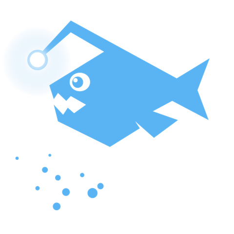

Learn Zumly in six short steps
Each step is one idea, a small example running on the page, and the code to copy. From the first view to gestures, it takes about twenty minutes.

- Your first appA canvas, two views and one trigger.
- Going deeperMore levels, view titles and the back button.
- SiblingsMove sideways between views of the same parent.
- Where views come fromFunctions with props and state, URLs and frameworks.
- Navigating from codezoomTo, goTo, zoomOut, back, events and the router.
- Motion and gesturesTiming, effects, drivers and gestures that follow your fingers.
What Zumly is
Zumly is a JavaScript library for zoom navigation, also called a zooming user interface (ZUI). Your interface is a set of screens called views. Clicking an element zooms into it, and the next view grows out of that element. Zooming out goes back the same way.
- The trigger becomes the destination. You never wonder where a screen came from: it grew out of what you clicked.
- Context stays visible. The view you came from stays behind the current one, dimmed, so you know where you are.
- Zooming out is going back. Click outside, scroll, swipe or press the back button.
It is not an infinite pan-and-zoom canvas like a map or a whiteboard. Movement happens in steps, through the elements you mark as triggers, and each view loads only when it is needed. You write the HTML and CSS; Zumly computes and animates the transforms.
| Zumly | Pan-and-zoom canvas | |
|---|---|---|
| Moves | In steps, from a trigger to its view | Freely, to any point and scale |
| Content | Separate views, loaded on demand | One large surface |
| Good for | Dashboards, drill-downs, menus, kiosks, configurators | Maps, whiteboards, diagrams |
It is a poor fit for long reading flows and plain forms, where there is nothing to zoom into.
Guides
Drivers
Animate with an animation library, or write your own driver.
Navigation controls
The back button and the sibling bar: every option, live, and how to build your own.